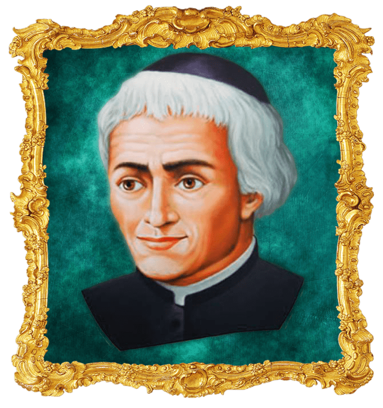

José Trinidad Reyes y Sevilla (11 de junio de 1797-20 de septiembre de 1855) es un reconocido personaje de Honduras, fundador del primer centro de estudios superiores de Honduras, la «Sociedad del Genio Emprendedor y del Buen Gusto», que después se convertiría en la Universidad Nacional Autónoma de Honduras y de la cual fue su primer rector. Fue un luchador contra la pobreza y sus causas, asistiendo a los pobres e insistiendo en su derecho a la educación no solo en asuntos de la fe, sino también en asuntos seculares como la cultura y las ciencias. Escribió varias pastorelas, reconstruidas por Rómulo Ernesto Durón, las cuales son las primeras manifestaciones teatrales en Centroamérica, y cuya representación de las mismas estableció los cimientos en Honduras para la posterior aparición del teatro. Estas pastorelas eran presentadas por el Padre Reyes en las iglesias de Tegucigalpa, una de estas es Navidad nuestra, un clásico del teatro hondureño contemporáneo por su mezcla armoniosa de las diferentes tradiciones presentes en la Navidad hondureña. Reyes fue un polemista a favor de los derechos de la mujer, esto se ve reflejado en sus pastorelas, donde los personajes femeninos son mujeres con mucha voz. Es célebre un escrito suyo aparecido con el seudónimo de Sofía Seyers, el cual es todo un manifiesto feminista, donde Reyes aboga porque se cumpla en las mujeres el derecho más elemental de la educación. Muchas de las ideas expresadas por Reyes en ese artículo están inspiradas en las socialistas francesas y en las ideas ilustradas de la Revolución francesa, de las que el padre Reyes en su faceta política fue un gran Reyes tuvo un talante afín a la Ilustración, a lo mejor del humanismo y al arte religioso. Él estaba convencido de la importancia de las artes como instrumentos para civilizar y hacer progresar a las naciones. Durante su vida en Tegucigalpa libró grandes batallas contra los excesos del fanatismo y la superstición política y religiosa.
| Próceres Hondureños |
|---|
| José Trinidad Reyes |
| José Trinidad Cabañas |
| José Cecilio del Valle |
| Dionisio de Herrera |